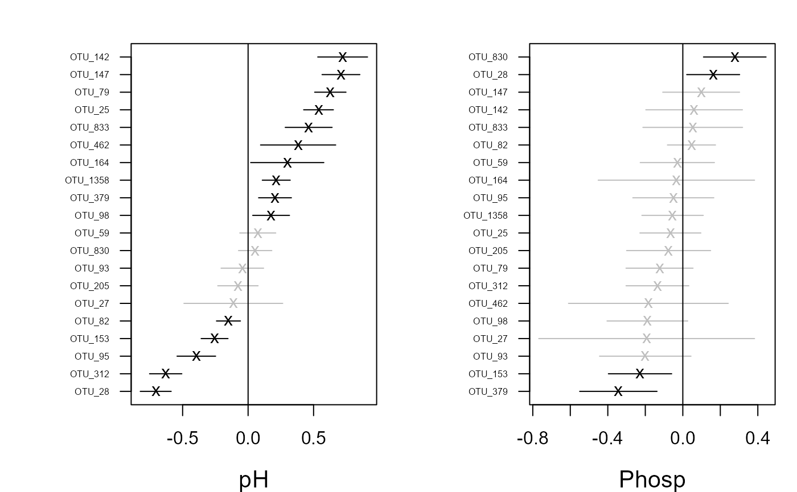

Plots covariate coefficients and their confidence intervals.
# S3 method for gllvm coefplot(object, y.label = TRUE, which.Xcoef = NULL, cex.ylab = 0.5, mfrow = NULL, mar = c(4, 6, 2, 1), xlim.list = NULL, ...)
Arguments
| object | an object of class 'gllvm'. |
|---|---|
| y.label | logical, if |
| which.Xcoef | vector indicating which covariate coefficients will be plotted. Can be vector of covariate names or numbers. Default is |
| cex.ylab | the magnification to be used for axis annotation relative to the current setting of cex. |
| mfrow | same as |
| mar | vector of length 4, which defines the margin sizes: |
| xlim.list | list of vectors with length of two to define the intervals for an x axis in each covariate plot. Defaults to NULL when the interval is defined by the range of point estimates and confidence intervals |
| ... | additional graphical arguments. |
Examples
## Load a dataset from the mvabund package data(antTraits) y <- as.matrix(antTraits$abund) X <- as.matrix(antTraits$env) # Fit model with environmental covariates fit <- gllvm(y, X, formula = ~ Bare.ground + Shrub.cover, family = poisson()) coefplot.gllvm(fit)# Fit model with all environmental covariates fitx <- gllvm(y, X, family = "negative.binomial") coefplot(fitx, mfrow = c(3,2)) coefplot(fitx, which.Xcoef = 1:2)# Fit gllvm model with environmental and trait covariates TR <- antTraits$traits fitT <- gllvm(y = y, X = X, TR = TR, family = "negative.binomial") coefplot(fitT)